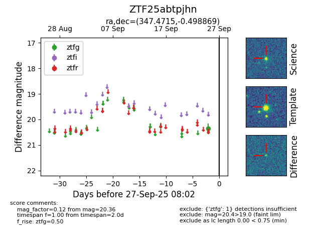

FINK: ZTF25abtpjhn
Lasair: ZTF25abtpjhn
ALeRCE: ZTF25abtpjhn
ZTF25abtpjhn (ztf,fink)
equatorial (ra, dec) = (347.4715,-0.49887)
galactic (l, b) = (76.2438,-53.89878)

last ztfg=20.36
1 ztfg detections